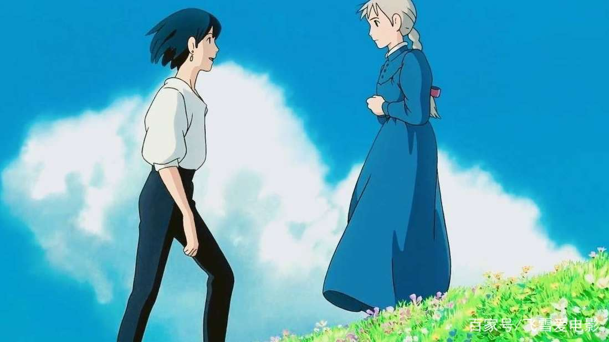
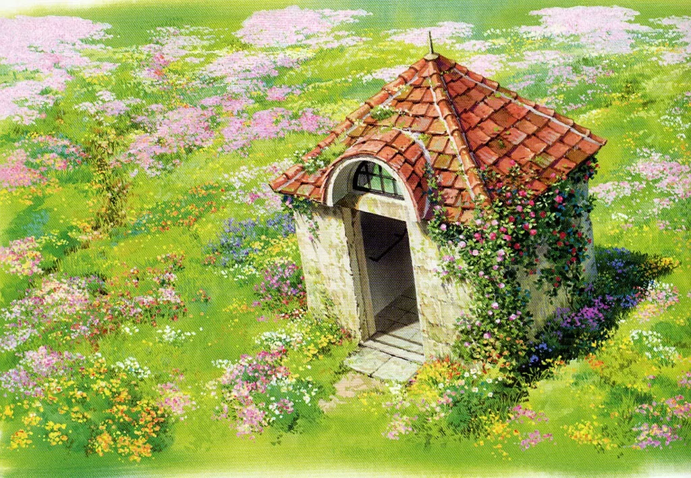
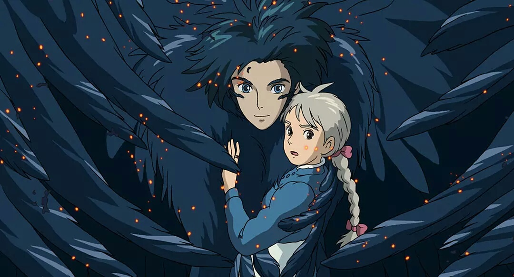
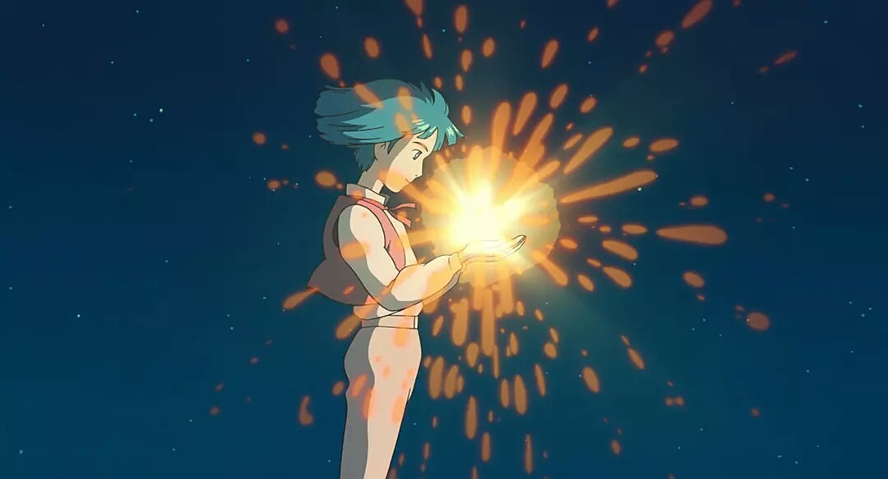

《哈尔的移动城堡》是迄今为止宫崎骏最深刻的作品。这部动画片情节跳跃，隐喻铺天盖地，和宫崎骏以往绵密、通俗的叙事风格截然不同。

本片的两个主角，其人性因素相当饱满，远超过以往动画片任何角色。苏菲是个文静善良的小姑娘，她对哈尔一见倾心，但是她自认为不漂亮，不敢奢望魅力十足的哈尔爱自己。她被荒野女巫施咒变成了老太婆，之后她来到哈尔的移动城堡，为哈尔打扫房间。她认为只要自己是个老太婆，为哈尔做任何事都不会难为情，所以她宁可做个老太婆。这就是她的心结，她的老态其实是内心消沉自卑的反映。男主角哈尔是个法力强大的魔法师，他品性善良，外表俊美，热爱打扮，又有点胆小，但是当爱人在场，他会勇猛无比。哈尔不愿为好战的王宫服务，四处躲避国王的征召，经常暗中破坏战争，所以说，他是一个孤独的反战人士。这个光环是宫崎骏特意加上去的，原著中并没有。
原著中哈尔只是一个拿了国王的酬劳去对付荒野女巫的魔法师，原著中根本没有战争场面。宫崎骏特意发展出一个反战主题，把哈尔的老师沙里曼夫人改写成好战专制的大反派，使得影片几乎成为一部反战电影。考虑到宫崎骏本人一贯反战，看起来哈尔就是宫崎骏的代言人。

哈尔第一次出场，是在一条僻静的街道上，苏菲在街道上碰到两个调戏她的士兵，哈尔忽然出现，手指一点，就替她解了围。荒野女巫的手下追赶他们，哈尔拉着苏菲腾空而起，两个人踩着舞曲的节拍凌空缓步前行，把世间繁华景象踩在脚底。苏菲像做梦一样随霍尔降落阳台，哈尔手一挥，飞坠而下，消失不见了。这是一个梦幻般的出场式。哈尔金发碧眼，眉目柔美，眼神迷离，文质彬彬，他英雄救美，温柔善意，来去如风，神秘浪漫，满足了少女对于白马王子的一切幻想。
哈尔第二次出场，是在苏菲变成老太婆以后。当时苏菲正在炉火上做饭，哈尔进门，看见家里来了生人，问：“请问，你是谁？”苏菲笑说：“我是苏菲婆婆，就是城堡新请来的清洁妇。”哈尔也没有多问，抢下苏菲手里的菜铲，“请你拿两片培根和六个鸡蛋过来。”苏菲把鸡蛋和培根递给哈尔，哈尔沉静地做饭，把鸡蛋一一打到平底锅里，再把蛋壳扔进火炉。油锅滋滋作响，火焰欢快地腾起，哈尔做了一顿丰盛的早餐。随后，他们俩和小徒弟马鲁克一起坐下吃饭，就像一家人。令我惊奇的是，哈尔的第二次出场竟然是在做家务，他就像大多数单身男人一样会做饭！身为大魔法师，哈尔出得厅堂进得厨房，无疑是个好男人。
哈尔还有一个优点，他说话很有礼貌。他说话经常用“请”“麻烦你”等礼貌用语，举止温文有礼。在王宫，面对强敌沙里曼夫人，哈尔明知接下来将有一场恶仗，他仍然弯腰向沙里曼夫人行礼，说：“老师的精神不错，令人高兴。我依约前来了。”风度从容不迫。 只有一次例外。一天，苏菲不小心动了浴室架子，搅乱了魔法，哈尔的头发再也变不回漂亮的金色。他围着一条浴巾，跌跌撞撞冲下楼，向苏菲发脾气：“苏菲！你是不是动了浴室的架子了！看，头发变成这种古怪的颜色了！”他绝望地大哭，颓然倒在椅子上，“没救了，真是奇耻大辱……假如不美，活着还有什么意思……”他死一般倒在灶台上，身上汩汩冒出绿黏液，屋子里阴气森森，黑暗精灵纷纷舞动，房梁扭曲颤动，绿黏液流了一地。苏菲不得不把哈尔抱上楼。这场戏略带喜剧性，揭示了哈尔孩子气的一面。
影片开头，在苏菲的帽子店里，姑娘们纷纷议论哈尔：“听说南町的那个叫玛莎的女孩，心脏被哈尔拿走了，好可怕！”传说中哈尔是个恶魔，人人谈虎色变，这就好像金庸笔下的一些侠客，比如萧峰，金蛇郎君，黄药师，虽然都是顶天立地的人物，却被“名门正派”视为大魔头。在世人看来，特立独行的人都是古怪的，而特立独行又极有本事的人，几乎便是灾星无疑了。连王宫御用魔法师沙里曼夫人也认为哈尔非常危险。但作为和哈尔朝夕相处的人，苏菲深信哈尔不是坏人，可是为什么所有人都把哈尔说得那么可怕呢？

影片末尾，悬念终于揭开。城堡溃散了，苏菲跌落谷底。她绝望间，发现手上哈尔送给她的戒指在动，戒指的光芒指向城堡的门，她打开城堡的门，走过一条长长的隧道，走进一间屋子。屋子里有一张桌子，上面铺了写满字的纸，那是哈尔的字迹。她走出屋子，发现外面就是哈尔的秘密花园，天上流星道道划过，流星砸到草地上，落入水中，发出丁丁的声音。一个小男孩远远走来，那就是童年时代的哈尔。苏菲惊呆了。小男孩站到草地中央，天上一颗流星落下，落入他手中，撞出耀眼的火花。小男孩微笑地捧住流星念念有词，似乎是在许愿，接着，他仰头把流星吞了下去。苏菲远远望见这一切，几乎不能置信——那就是所谓的契约，所谓的交易。那其实不过是孩子的一个许愿而已！男孩皱眉弯腰，捧住胸口，然后，他把一颗燃烧的心生生捧出来。火焰熊熊燃烧着，男孩手捧着燃烧的心，静静站在草坪中央。这是全片最经典的一幕。一瞬间，苏菲明白了一切。
在流星满天的花园里，小男孩哈尔手捧熊熊燃烧的心火，走向远方。这一幕如此感人，又如此令人悲伤。苏菲在时间隧道里往回走，边走边哭。那只是一个孩子单纯的愿望，却成了做人的全部代价。哈尔自此被世人看作眼中钉，他放逐自己，驱使城堡穿越无数大山大海，寻找他的爱人。现在，他的爱人终于来了。苏菲走出隧道，看见哈尔化身为大鸟，静静守在山谷里等她，她上前，拨开他蓬乱的羽毛，亲吻他血迹斑斑的脸庞，说： “哈尔，对不起，你在这里等我，而我却一直到现在才来。” 这是最感人肺腑的表白。她才知道他一直在等她。他受了那么多苦，孤独地战斗了那么久，她却一直没能为他分担。她感到歉疚。

然后，苏菲解除了哈尔和卡西法的契约，把心脏送回哈尔的心房。哈尔收回心脏，卡西法也活了下来。他们重新制造了一个美丽的花园城堡。支配这所花园城堡的，不再是哈尔那团孤愤叛逆的心火，而是哈尔与苏菲的爱情。这个大团圆的结局虽嫌老套，倒也说得通。仔细想来，也许只有爱情才能拯救为世所不容的理想主义者，也许只有爱情才会让沉浸于英雄梦想的男人回家。 这就是哈尔的故事。我喜欢这故事。每个理想主义者心中，都有一个哈尔。一些人已经找到爱，一些人尚没有，也许终生得不到。那些得不到爱的人，很有可能变成荒野女巫那样的恶魔；或者一部分人会像英雄丹柯一样，倒地死去，悄悄地死在世人的漠视中，不为人知。 希望更多的人会热爱这部影片！！！